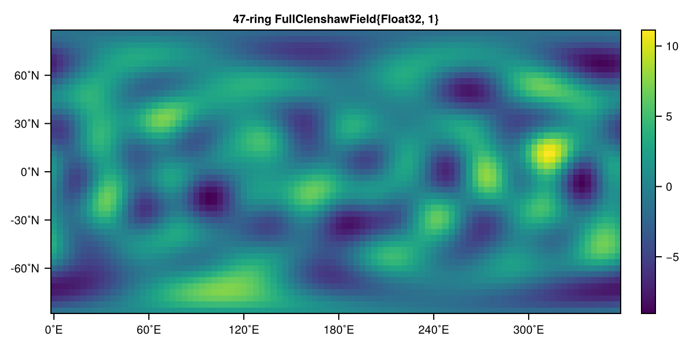
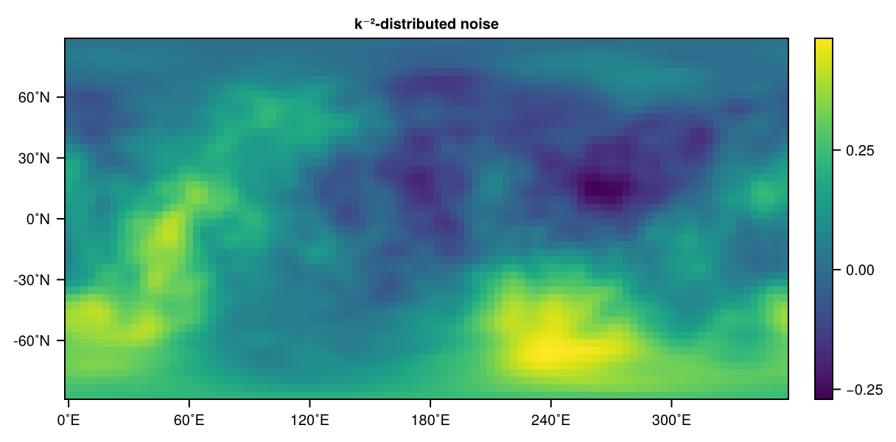

SpeedyTransforms
SpeedyTransforms is a submodule that has been developed for SpeedyWeather.jl which is technically independent (SpeedyWeather.jl however imports it) and can also be used without running simulations. It is just not put into its own respective repository for now.
The SpeedyTransforms are based on RingGrids and LowerTriangularArrays to hold data in either grid-point space or in spectral space. So you want to read these sections first for clarifications how to work with these. We will also not discuss mathematical details of the Spherical Harmonic Transform here, but will focus on the usage of the SpeedyTransforms module.
The SpeedyTransforms module also implements the gradient operators $\nabla, \nabla \cdot, \nabla \times, \nabla^2, \nabla^{-2}$ in spectral space. Combined with the spectral transform, you could for example start with a velocity field in grid-point space, transform to spectral, compute its divergence and transform back to obtain the divergence in grid-point space. Examples are outlined in Gradient operators.
Notation: Spectral resolution
There are different ways to describe the spectral resolution, the truncation wavenumber (e.g. T31), the maximum degree $l$ and order $m$ of the spherical harmonics (e.g. $l_{max}=31$, $m_{max} = 31$), or the size of the lower triangular matrix, e.g. 32x32. In this example, they are all equivalent. We often use the truncation, i.e. T31, for brevity but sometimes it is important to describe degree and order independently (see for example One more degree for spectral fields). Note also how truncation, degree and order are 0-based, but matrix sizes are 1-based.
Example transform
Lets start with a simple transform. We could be using SpeedyWeather but to be more verbose these are the modules required to load
using SpeedyWeather.RingGrids
using SpeedyWeather.LowerTriangularArrays
using SpeedyWeather.SpeedyTransformsAs an example, we want to transform the $l=m=1$ spherical harmonic from spectral space in alms to grid-point space. Note, the $+1$ on both degree (first index) and order (second index) for 0-based harmonics versus 1-based matrix indexing, see Size of LowerTriangularArray. Create a LowerTriangularMatrix for T5 resolution, i.e. 6x6 matrix size
alms = zeros(LowerTriangularMatrix{ComplexF64}, 6, 6) # spectral coefficients T5
alms[2, 2] = 1 # only l=1, m=1 harmonic
alms21-element, 6x6 LowerTriangularMatrix{ComplexF64}
0.0+0.0im 0.0+0.0im 0.0+0.0im 0.0+0.0im 0.0+0.0im 0.0+0.0im
0.0+0.0im 1.0+0.0im 0.0+0.0im 0.0+0.0im 0.0+0.0im 0.0+0.0im
0.0+0.0im 0.0+0.0im 0.0+0.0im 0.0+0.0im 0.0+0.0im 0.0+0.0im
0.0+0.0im 0.0+0.0im 0.0+0.0im 0.0+0.0im 0.0+0.0im 0.0+0.0im
0.0+0.0im 0.0+0.0im 0.0+0.0im 0.0+0.0im 0.0+0.0im 0.0+0.0im
0.0+0.0im 0.0+0.0im 0.0+0.0im 0.0+0.0im 0.0+0.0im 0.0+0.0imNow transform is the function that takes spectral coefficients alms and converts them a grid-point space map (or vice versa)
map = transform(alms)128-element, 8-ring FullGaussianField{Float64, 1}:
-0.19278869685896943
-0.17811353112752484
-0.13632219488509495
-0.07377704023518322
0.0
0.07377704023518322
0.13632219488509495
0.17811353112752484
0.19278869685896943
0.17811353112752484
⋮
0.17811353112752484
0.19278869685896943
0.17811353112752484
0.13632219488509495
0.07377704023518322
0.0
-0.07377704023518322
-0.13632219488509495
-0.17811353112752484By default, the transforms transforms onto a FullGaussianGrid unravelled here into a vector west to east, starting at the prime meridian, then north to south, see RingGrids. We can visualize map quickly with a UnicodePlot via heatmap (see Visualising Fields), or alternatively in higher quality after using CairoMakie or using GLMakie, see Visualisation via Makie too
using UnicodePlots
heatmap(map) 8-ring FullGaussianField{Float64, 1}
┌────────────────┐ 0.7
90│▄▄▄▄▄▄▄▄▄▄▄▄▄▄▄▄│┌──┐
˚N│▄▄▄▄▄▄▄▄▄▄▄▄▄▄▄▄││▄▄│
│▄▄▄▄▄▄▄▄▄▄▄▄▄▄▄▄││▄▄│
-90│▄▄▄▄▄▄▄▄▄▄▄▄▄▄▄▄│└──┘
└────────────────┘-0.7
0 ˚E 360 Yay! This is the what the $l=m=1$ spherical harmonic is supposed to look like! Now let's go back to spectral space with transform
alms2 = transform(map)21-element, 6x6 LowerTriangularMatrix{ComplexF64}
0.0+0.0im 0.0+0.0im 0.0+0.0im … 0.0+0.0im 0.0+0.0im
0.0+0.0im 1.0+0.0im 0.0+0.0im 0.0+0.0im 0.0+0.0im
0.0+0.0im 0.0+0.0im 0.0+0.0im 0.0+0.0im 0.0+0.0im
0.0+0.0im 4.86756e-16+0.0im 0.0+0.0im 0.0+0.0im 0.0+0.0im
0.0+0.0im 0.0+0.0im 0.0+0.0im 0.0+0.0im 0.0+0.0im
0.0+0.0im 9.47165e-17+0.0im 0.0+0.0im … 0.0+0.0im -2.47957e-17+0.0imComparing with alms from above you can see that the transform is exact up to a typical rounding error from Float64.
alms ≈ alms2trueYAY! The transform is typically idempotent, meaning that either space may hold information that is not exactly representable in the other but the first two-way transform will remove that so that subsequent transforms do not change this any further. However, also note here that the default FullGaussianGrid is an exact grid, inexact grids usually have a transform error that is larger than the rounding error from floating-point arithmetic.
Transform onto another grid
While the default grid for SpeedyTransforms is the FullGaussianGrid we can transform onto other grids by specifying Grid too
map = transform(alms, Grid=HEALPixGrid)
heatmap(map) 7-ring HEALPixField{Float64, 1}
┌──────────────┐ 0.7
90│▄▄▄▄▄▄▄▄▄▄▄▄▄▄│┌──┐
˚N│▄▄▄▄▄▄▄▄▄▄▄▄▄▄││▄▄│
│▄▄▄▄▄▄▄▄▄▄▄▄▄▄││▄▄│
-90│▄▄▄▄▄▄▄▄▄▄▄▄▄▄│└──┘
└──────────────┘-0.7
0 ˚E 360 which, if transformed back, however, can yield a larger transform error as discussed above
transform(map)21-element, 6x6 LowerTriangularMatrix{ComplexF64}
0.0+0.0im 0.0+0.0im 0.0+0.0im … 0.0+0.0im 0.0+0.0im
0.0+0.0im 1.01215-1.47078e-17im 0.0+0.0im 0.0+0.0im 0.0+0.0im
0.0+0.0im 3.42299e-17-1.51822e-34im 0.0+0.0im 0.0+0.0im 0.0+0.0im
0.0+0.0im 0.0185292-1.7008e-17im 0.0+0.0im 0.0+0.0im 0.0+0.0im
0.0+0.0im -6.28844e-17+2.78914e-34im 0.0+0.0im 0.0+0.0im 0.0+0.0im
0.0+0.0im -0.0164851+6.08679e-18im 0.0+0.0im … 0.0+0.0im 0.0+0.0imOn such a coarse grid the transform error (absolute and relative) is about $10^{-2}$, this decreases for higher resolution. The transform function will choose a corresponding grid-spectral resolution (see Matching spectral and grid resolution) following quadratic truncation, but you can always truncate/interpolate in spectral space with spectral_truncation, spectral_interpolation which takes trunc = $l_{max} = m_{max}$ as second argument
spectral_truncation(alms, 2)6-element, 3x3 LowerTriangularMatrix{ComplexF64}
0.0+0.0im 0.0+0.0im 0.0+0.0im
0.0+0.0im 1.0+0.0im 0.0+0.0im
0.0+0.0im 0.0+0.0im 0.0+0.0imYay, we just chopped off $l > 2$ from alms which contained the harmonics up to degree and order 5 before. If the second argument in spectral_truncation is larger than alms then it will automatically call spectral_interpolation and vice versa. Also see Interpolation between grids to interpolate directly between grids. If you want to control directly the resolution of the grid you want to transform onto, use the keyword dealiasing (default: 2 for quadratic, see Matching spectral and grid resolution). But you can also provide a SpectralTransform instance to reuse a precomputed spectral transform. More on that now.
The SpectralTransform struct
The function transform only with arguments as shown above, will create an instance of SpectralTransform under the hood. This object contains all precomputed information that is required for the transform, either way: The Legendre polynomials, pre-planned Fourier transforms, precomputed gradient, divergence and curl operators, the spherical harmonic eigenvalues among others. Maybe the most intuitive way to create a SpectralTransform is to start with a SpectralGrid, which already defines which spectral resolution is supposed to be combined with a given grid.
using SpeedyWeather
spectral_grid = SpectralGrid(NF=Float32, trunc=5, Grid=OctahedralGaussianGrid, dealiasing=3)SpectralGrid{Spectrum{...}, OctahedralGaussianGrid{...}}
├ Spectral: T5 LowerTriangularMatrix{Complex{Float32}}, radius = 6.371e6 m
├ Grid: Field{Float32} on 12-ring OctahedralGaussianGrid, 360 grid points
├ Resolution: 1190km (average)
├ Vertical: 8-layer atmosphere, 2-layer land
└ Device: CPU using Array(We using SpeedyWeather here as SpectralGrid is exported therein). We also specify the number format Float32 here to be used for the transform although this is the default anyway. From spectral_grid we now construct a SpectralTransform as follows
S = SpectralTransform(spectral_grid)SpectralTransform{Float32, Array}:
├ Spectral: T5, 7x6 LowerTriangularMatrix{Complex{Float32}}
├ Grid: Field{Float32}, 12-ring OctahedralGaussianGrid
├ Truncation: dealiasing = 3 (cubic)
├ Legendre: Polynomials 1.54 KB, shortcut: linear
└ Memory: for 8 layers (18.94 KB)Note that because we chose dealiasing=3 (cubic truncation) we now match a T5 spectral field with a 12-ring octahedral Gaussian grid, instead of the 8 rings as above. So going from dealiasing=2 (default) to dealiasing=3 increased our resolution on the grid while the spectral resolution remains the same.
Passing on S the SpectralTransform now allows us to transform directly on the grid defined therein. Note that we recreate alms to be of size 7x6 instead of 6x6 for T5 spectral resolution because SpeedyWeather uses internally One more degree for spectral fields meaning also that's the default when creating a SpectralTransform from a SpectralGrid. But results don't change if the last degree (row) contains only zeros.
alms = zeros(LowerTriangularMatrix{ComplexF64}, 7, 6) # spectral coefficients
alms[2, 2] = 1 # only l=1, m=1 harmonic
map = transform(alms, S)
heatmap(map) 12-ring OctahedralGaussianField{Float32, 1}
┌────────────────────────┐ 0.7
90│▄▄▄▄▄▄▄▄▄▄▄▄▄▄▄▄▄▄▄▄▄▄▄▄│┌──┐
│▄▄▄▄▄▄▄▄▄▄▄▄▄▄▄▄▄▄▄▄▄▄▄▄││▄▄│
˚N│▄▄▄▄▄▄▄▄▄▄▄▄▄▄▄▄▄▄▄▄▄▄▄▄││▄▄│
│▄▄▄▄▄▄▄▄▄▄▄▄▄▄▄▄▄▄▄▄▄▄▄▄││▄▄│
│▄▄▄▄▄▄▄▄▄▄▄▄▄▄▄▄▄▄▄▄▄▄▄▄││▄▄│
-90│▄▄▄▄▄▄▄▄▄▄▄▄▄▄▄▄▄▄▄▄▄▄▄▄│└──┘
└────────────────────────┘-0.7
0 ˚E 360 Yay, this is again the $l=m=1$ harmonic, but this time on a slightly higher resolution OctahedralGaussianGrid as specified in the SpectralTransform S. Note that also the number format was converted on the fly to Float32 because that is the number format we specified in S! And from grid to spectral
alms2 = transform(map, S)27-element, 7x6 LowerTriangularMatrix{ComplexF32}
2.05564f-9+0.0im 0.0+0.0im … 0.0+0.0im
0.0+0.0im 1.0-2.14344f-8im 0.0+0.0im
-1.3654f-9+0.0im 0.0+0.0im 0.0+0.0im
0.0+0.0im -2.66275f-8-6.93167f-11im 0.0+0.0im
-3.22443f-10+0.0im 0.0+0.0im 0.0+0.0im
0.0+0.0im -4.58858f-8-8.19443f-9im … 6.58519f-9+4.79414f-9im
1.85859f-9+0.0im 0.0+0.0im 0.0+0.0imAs you can see the rounding error is now more like $10^{-8}$ as we are using Float32 (the OctahedralGaussianGrid is another exact grid). While for this interface to SpeedyTransforms this means that on a grid-to-spectral transform you will get one more degree than orders of the spherical harmonics by default. You can, however, always truncate this additional degree, say to T5 (hence matrix size is 6x6)
spectral_truncation(alms2, 5, 5)21-element, 6x6 LowerTriangularMatrix{ComplexF32}
2.05564f-9+0.0im 0.0+0.0im … 0.0+0.0im
0.0+0.0im 1.0-2.14344f-8im 0.0+0.0im
-1.3654f-9+0.0im 0.0+0.0im 0.0+0.0im
0.0+0.0im -2.66275f-8-6.93167f-11im 0.0+0.0im
-3.22443f-10+0.0im 0.0+0.0im 0.0+0.0im
0.0+0.0im -4.58858f-8-8.19443f-9im … 6.58519f-9+4.79414f-9imspectral_truncation(alms2, 5) would have returned the same, a single argument is then assumed equal for both degrees and orders. Alternatively, you can also pass on the one_more_degree=false argument to the SpectralTransform constructor
S = SpectralTransform(spectral_grid, one_more_degree=false)SpectralTransform{Float32, Array}:
├ Spectral: T5, 6x6 LowerTriangularMatrix{Complex{Float32}}
├ Grid: Field{Float32}, 12-ring OctahedralGaussianGrid
├ Truncation: dealiasing = 3 (cubic)
├ Legendre: Polynomials 1.30 KB, shortcut: linear
└ Memory: for 8 layers (18.94 KB)As you can see the 7x6 LowerTriangularMatrix in the description above dropped down to 6x6 LowerTriangularMatrix, this is the size of the input that is expected (otherwise you will get a BoundsError).
SpectralTransform generators
While you can always create a SpectralTransform from a SpectralGrid (which defines both spectral and grid space) there are other constructors/generators available:
SpectralTransform(alms)SpectralTransform{Float64, Array}:
├ Spectral: T5, 7x6 LowerTriangularMatrix{Complex{Float64}}
├ Grid: Field{Float64}, 8-ring FullGaussianGrid
├ Truncation: dealiasing = 1.67 (linear)
├ Legendre: Polynomials 1.75 KB, shortcut: linear
└ Memory: for 1 layers (1.62 KB)Now we have defined the resolution of the spectral space through alms but create a SpectralTransform by making assumption about the grid space. E.g. Grid=FullGaussianGrid by default, dealiasing=2 and nlat_half correspondingly. But you can also pass them on as keyword arguments, for example
SpectralTransform(alms, Grid=OctahedralClenshawGrid, nlat_half=24)SpectralTransform{Float64, Array}:
├ Spectral: T5, 7x6 LowerTriangularMatrix{Complex{Float64}}
├ Grid: Field{Float64}, 47-ring OctahedralClenshawGrid
├ Truncation: dealiasing = 15 (>cubic)
├ Legendre: Polynomials 6.07 KB, shortcut: linear
└ Memory: for 1 layers (45.78 KB)Only note that you don't want to specify both nlat_half and dealiasing as you would otherwise overspecify the grid resolution (dealiasing will be ignored in that case). This also works starting from the grid space
grid = rand(FullClenshawGrid, 12)
SpectralTransform(grid)SpectralTransform{Float64, Array}:
├ Spectral: T15, 16x16 LowerTriangularMatrix{Complex{Float64}}
├ Grid: Field{Float64}, 23-ring FullClenshawGrid
├ Truncation: dealiasing = 2 (quadratic)
├ Legendre: Polynomials 16.01 KB, shortcut: linear
└ Memory: for 1 layers (10.58 KB)where you can also provide spectral resolution trunc or dealiasing. You can also provide both a grid and a lower triangular matrix to describe both spaces
SpectralTransform(grid, alms)SpectralTransform{Float64, Array}:
├ Spectral: T5, 7x6 LowerTriangularMatrix{Complex{Float64}}
├ Grid: Field{Float64}, 23-ring FullClenshawGrid
├ Truncation: dealiasing = 7 (>cubic)
├ Legendre: Polynomials 3.48 KB, shortcut: linear
└ Memory: for 1 layers (10.58 KB)and you will precompute the transform between them. For more generators see the docstrings at ?SpectralTransform.
Power spectrum
How to take some data and compute a power spectrum with SpeedyTransforms you may ask. Say you have some global data in a matrix m that looks, for example, like
m96×47 Matrix{Float32}:
-1.56437 -2.2391 -3.6227 … -6.22428 -4.05734 -1.76297
-1.52048 -2.05723 -3.23071 -5.99407 -3.84655 -1.63864
-1.47374 -1.85779 -2.79504 -5.70997 -3.60441 -1.50311
-1.42511 -1.64536 -2.32758 -5.37269 -3.33198 -1.35701
-1.37566 -1.42485 -1.84101 -4.98373 -3.03074 -1.20107
-1.32645 -1.20135 -1.3483 … -4.54552 -2.70257 -1.03615
-1.27861 -0.980011 -0.862209 -4.0614 -2.34973 -0.863247
-1.23325 -0.765847 -0.394815 -3.53554 -1.97487 -0.683419
-1.19143 -0.563631 0.0428802 -2.97297 -1.58096 -0.497844
-1.15418 -0.377767 0.441283 -2.37938 -1.17127 -0.307776
⋮ ⋱ ⋮
-1.72771 -2.64417 -4.12732 -6.07735 -4.55982 -2.33694
-1.73341 -2.71745 -4.34851 -6.26144 -4.61636 -2.32103
-1.73323 -2.7632 -4.50957 -6.41116 -4.64848 -2.29378
-1.7269 -2.7794 -4.60336 … -6.52274 -4.65421 -2.25476
-1.7143 -2.76471 -4.62462 -6.59273 -4.63181 -2.20366
-1.69549 -2.71863 -4.57032 -6.61805 -4.57981 -2.14026
-1.67066 -2.64145 -4.43984 -6.59597 -4.49704 -2.06443
-1.64017 -2.53435 -4.23508 -6.52416 -4.38264 -1.97617
-1.60453 -2.3993 -3.96045 … -6.40072 -4.23612 -1.8756You hopefully know which grid this data comes on, let us assume it is a regular latitude-longitude grid, which we call the FullClenshawGrid (in analogy to the Gaussian grid based on the Gaussian quadrature). Note that for the spectral transform this should not include the poles, so the 96x47 matrix size here corresponds to 23 latitudes north and south of the Equator respectively plus the equator (=47).
We now wrap this matrix into a FullClenshawGrid (input_as=Matrix is required because all grids organise their data as vectors, see Creating a Field from data) therefore to associate it with the necessary grid information like its coordinates
map = FullClenshawGrid(m, input_as=Matrix)
using CairoMakie
heatmap(map)
Now we transform into spectral space and call power_spectrum(::LowerTriangularMatrix)
alms = transform(map)
power = power_spectrum(alms)Which returns a vector of power at every wavenumber. By default this is normalized as average power per degree, you can change that with the keyword argument normalize=false. Plotting this yields
using UnicodePlots
k = 0:length(power)-1
lineplot(k, power, yscale=:log10, ylim=(1e-15, 10), xlim=extrema(k),
ylabel="power", xlabel="wavenumber", height=10, width=60) ┌────────────────────────────────────────────────────────────┐
10¹ │⠀⢀⣀⠤⠤⠤⠤⠤⠤⠤⠤⠤⠤⣀⣀⠤⠤⠤⠤⡄⠀⠀⠀⠀⠀⠀⠀⠀⠀⠀⠀⠀⠀⠀⠀⠀⠀⠀⠀⠀⠀⠀⠀⠀⠀⠀⠀⠀⠀⠀⠀⠀⠀⠀⠀⠀⠀⠀⠀⠀│
│⠊⠁⠀⠀⠀⠀⠀⠀⠀⠀⠀⠀⠀⠀⠀⠀⠀⠀⠀⢱⠀⠀⠀⠀⠀⠀⠀⠀⠀⠀⠀⠀⠀⠀⠀⠀⠀⠀⠀⠀⠀⠀⠀⠀⠀⠀⠀⠀⠀⠀⠀⠀⠀⠀⠀⠀⠀⠀⠀⠀│
│⠀⠀⠀⠀⠀⠀⠀⠀⠀⠀⠀⠀⠀⠀⠀⠀⠀⠀⠀⢸⠀⠀⠀⠀⠀⠀⠀⠀⠀⠀⠀⠀⠀⠀⠀⠀⠀⠀⠀⠀⠀⠀⠀⠀⠀⠀⠀⠀⠀⠀⠀⠀⠀⠀⠀⠀⠀⠀⠀⠀│
│⠀⠀⠀⠀⠀⠀⠀⠀⠀⠀⠀⠀⠀⠀⠀⠀⠀⠀⠀⠸⡀⠀⠀⠀⠀⠀⠀⠀⠀⠀⠀⠀⠀⠀⠀⠀⠀⠀⠀⠀⠀⠀⠀⠀⠀⠀⠀⠀⠀⠀⠀⠀⠀⠀⠀⠀⠀⠀⠀⠀│
power │⠀⠀⠀⠀⠀⠀⠀⠀⠀⠀⠀⠀⠀⠀⠀⠀⠀⠀⠀⠀⡇⠀⠀⠀⠀⠀⠀⠀⠀⠀⠀⠀⠀⠀⠀⠀⠀⠀⠀⠀⠀⠀⠀⠀⠀⠀⠀⠀⠀⠀⠀⠀⠀⠀⠀⠀⠀⠀⠀⠀│
│⠀⠀⠀⠀⠀⠀⠀⠀⠀⠀⠀⠀⠀⠀⠀⠀⠀⠀⠀⠀⡇⠀⠀⠀⠀⠀⠀⠀⠀⠀⠀⠀⠀⠀⠀⠀⠀⠀⠀⠀⠀⠀⠀⠀⠀⠀⠀⠀⠀⠀⠀⠀⠀⠀⠀⠀⠀⠀⠀⠀│
│⠀⠀⠀⠀⠀⠀⠀⠀⠀⠀⠀⠀⠀⠀⠀⠀⠀⠀⠀⠀⢱⠀⠀⠀⠀⠀⠀⠀⠀⠀⠀⠀⠀⠀⠀⠀⠀⠀⠀⠀⠀⠀⠀⠀⠀⠀⠀⠀⠀⠀⠀⠀⠀⠀⠀⠀⠀⠀⠀⠀│
│⠀⠀⠀⠀⠀⠀⠀⠀⠀⠀⠀⠀⠀⠀⠀⠀⠀⠀⠀⠀⢸⠀⠀⠀⠀⠀⠀⠀⠀⠀⠀⠀⠀⠀⠀⠀⠀⠀⠀⠀⠀⠀⠀⠀⠀⠀⠀⠀⠀⠀⠀⠀⠀⠀⠀⠀⠀⠀⠀⠀│
│⠀⠀⠀⠀⠀⠀⠀⠀⠀⠀⠀⠀⠀⠀⠀⠀⠀⠀⠀⠀⠸⡀⠀⠀⠀⠀⠀⠀⠀⠀⠀⠀⠀⠀⠀⠀⠀⠀⠀⠀⠀⠀⠀⠀⠀⠀⠀⠀⠀⠀⠀⠀⠀⠀⠀⠀⠀⠀⠀⠀│
10⁻¹⁵ │⠀⠀⠀⠀⠀⠀⠀⠀⠀⠀⠀⠀⠀⠀⠀⠀⠀⠀⠀⠀⠀⣇⣀⣀⣀⣀⣀⣀⡀⡀⣀⣀⢀⠀⣀⣀⣀⣀⡀⠀⠀⠀⠀⠀⢀⠀⣀⠀⠀⠀⡀⢀⣀⣀⡀⠀⠀⠀⠀⠀│
└────────────────────────────────────────────────────────────┘
⠀0⠀⠀⠀⠀⠀⠀⠀⠀⠀⠀⠀⠀⠀⠀⠀⠀⠀⠀⠀⠀⠀⠀⠀⠀⠀⠀⠀⠀⠀⠀⠀⠀⠀⠀⠀⠀⠀⠀⠀⠀⠀⠀⠀⠀⠀⠀⠀⠀⠀⠀⠀⠀⠀⠀⠀⠀⠀31⠀
⠀⠀⠀⠀⠀⠀⠀⠀⠀⠀⠀⠀⠀⠀⠀⠀⠀⠀⠀⠀⠀⠀⠀⠀⠀⠀wavenumber⠀⠀⠀⠀⠀⠀⠀⠀⠀⠀⠀⠀⠀⠀⠀⠀⠀⠀⠀⠀⠀⠀⠀⠀⠀⠀ The power spectrum of our data is about 1 up to wavenumber 10 and then close to zero for higher wavenumbers (which is in fact how we constructed this fake data). Let us turn this around and use SpeedyTransforms to create random noise in spectral space to be used in grid-point space!
Example: Creating k^n-distributed noise
How would we construct random noise in spectral space that follows a certain power law and transform it back into grid-point space? Define the wavenumber $k$ for T31, the spectral resolution we are interested in. (We start from 1 instead of 0 to avoid zero to the power of something negative). Now create some normally distributed spectral coefficients but scale them down for higher wavenumbers with $k^{-2}$
k = 1:32
A = randn(Complex{Float32}, 32, 32)
A .*= k.^-2
alms = LowerTriangularArray(A)528-element, 32x32 LowerTriangularMatrix{ComplexF32}
0.280715+0.982496im … 0.0+0.0im
-0.285581-0.044726im 0.0+0.0im
0.104701+0.131754im 0.0+0.0im
0.0110239-0.0402849im 0.0+0.0im
0.000705189+0.0395599im 0.0+0.0im
0.0128362-0.0346075im … 0.0+0.0im
-0.0165186-0.00437422im 0.0+0.0im
0.0014635-0.00390468im 0.0+0.0im
0.00924634+0.00201036im 0.0+0.0im
-0.00103787+0.00434947im 0.0+0.0im
⋮ ⋱
-0.00143361-2.61056f-5im 0.0+0.0im
-0.000762412+0.000316593im 0.0+0.0im
0.00131141+0.00177726im … 0.0+0.0im
0.000195706-0.000752235im 0.0+0.0im
0.000117693+0.000179147im 0.0+0.0im
0.000712348-0.000450318im 0.0+0.0im
0.0012859-0.000382938im 0.0+0.0im
-0.000688194-0.000565742im … 0.0+0.0im
0.000295727-0.000719548im -2.8627f-5+0.000878271imWe first create a Julia Matrix so that the matrix-vector broadcasting .*= k is correctly applied across dimensions of A and then convert to a LowerTriangularMatrix.
Awesome. For higher degrees and orders the amplitude clearly decreases! Now to grid-point space and let us visualize the result
map = transform(alms)
using CairoMakie
heatmap(map, title="k⁻²-distributed noise")
You can always access the underlying data in map via map.data in case you need to get rid of the wrapping into a grid again!
Precomputed polynomials and allocated memory
Depending on horizontal and vertical resolution of spectral and grid space, a SpectralTransform can be become very large in memory. Also the recomputation of the polynomials and the planning of the FFTs are expensive compared to the actual transform itself. Therefore reuse a SpectralTransform wherever possible.
The spectral transform uses a Legendre transform in meridional direction. For this the Legendre polynomials are required, at each latitude ring this is a $l_{max} \times m_{max}$ lower triangular matrix. Storing precomputed Legendre polynomials therefore quickly increase in size with resolution. It is therefore advised to reuse a precomputed SpectralTransform object wherever possible. This prevents transforms to allocate large memory which would otherwise be garbage collected again after the transform.
You get information about the size of that memory (both polynomials and required scratch memory) in the terminal "show" of a SpectralTransform object, e.g. at T127 resolution with 8 layers these are
using SpeedyWeather
spectral_grid = SpectralGrid(trunc=127, nlayers=8)
SpectralTransform(spectral_grid)SpectralTransform{Float32, Array}:
├ Spectral: T127, 129x128 LowerTriangularMatrix{Complex{Float32}}
├ Grid: Field{Float32}, 192-ring OctahedralGaussianGrid
├ Truncation: dealiasing = 2 (quadratic)
├ Legendre: Polynomials 3.36 MB, shortcut: linear
└ Memory: for 8 layers (2.50 MB)Batched Transforms
SpeedyTransforms also supports batched transforms. With batched input data the transform is performed along the leading dimension, and all further dimensions are interpreted as batch dimensions. Take for example
alms = randn(LowerTriangularArray{Complex{Float32}}, 32, 32, 5)
grids = transform(alms)4608×5, 48-ring FullGaussianField{Float32, 2}:
3.11961 4.80487 -14.0606 -2.47732 12.5263
2.78953 4.45131 -13.9859 -2.44164 12.0897
2.44948 4.02463 -13.8145 -2.38373 11.6294
2.10583 3.5365 -13.5465 -2.31077 11.1477
1.76472 2.99923 -13.184 -2.23021 10.6468
1.43182 2.42543 -12.7308 -2.14965 10.1293
1.11224 1.82763 -12.1923 -2.07661 9.5976
0.810386 1.21803 -11.5753 -2.01837 9.0546
0.529808 0.608214 -10.8877 -1.98177 8.50341
0.273151 0.00898796 -10.1383 -1.97305 7.94748
⋮
-7.58366 9.32031 4.77228 -4.94413 2.5324
-7.40319 9.33167 5.23481 -5.02701 2.7923
-7.16308 9.32589 5.58456 -5.08423 3.04567
-6.86674 9.29979 5.82251 -5.11703 3.28987
-6.51769 9.25049 5.95163 -5.12729 3.52229
-6.11949 9.17553 5.97664 -5.11734 3.7405
-5.67568 9.07296 5.9039 -5.08973 3.94238
-5.18971 8.9415 5.74105 -5.04705 4.12623
-4.66491 8.78053 5.49684 -4.99179 4.29086In this case we first randomly generated five (32x32) LowerTriangularArray that hold the coefficients and then transformed all five matrices batched to the grid space with the transform command, yielding 5 RingGrids with each 48-rings.
Batched power spectra
SpeedyTransforms also supports power spectra calculated over any additional dimensions to the leading spherical harmonic dimension (it is unravelled as a vector so the first only, not the first two...). But the power spectrum is always calculated along that first spherical-harmonic dimension. For example
alms = randn(LowerTriangularArray{Complex{Float32}}, 5, 5, 2)
power_spectrum(alms)5×2 Matrix{Float32}:
1.05568 2.65357
0.590579 1.16816
0.634078 0.768259
0.946322 0.800911
2.29668 1.63309returns the power spectrum for [..., 1] in the first column and [..., 2] in the second. This avoids to loop over these additional dimensions, but the result would be the same:
power_spectrum(alms[:, 1])5-element Vector{Float32}:
1.0556806
0.5905788
0.6340778
0.94632155
2.2966797Functions and type index
SpeedyWeather.SpeedyTransforms.AbstractLegendreShortcut — TypeLegendre shortcut is the truncation of the loop over the order m of the spherical harmonics in the Legendre transform. For reduced grids with as few as 4 longitudes around the poles (HEALPix grids) or 20 (octahedral grids) the higher wavenumbers in large orders m do not project (significantly) onto such few longitudes. For performance reasons the loop over m can therefore but truncated early. A Legendre shortcut <: AbstractLegendreShortcut is implemented as a functor that returns the 0-based maximum order m to retain per latitude ring, i.e. to be used for m in 0:mmax_truncation.
New shortcuts can be added by defining struct LegendreShortcutNew <: AbstractLegendreShortcut end and the functor method LegendreShortcutNew(nlon::Integer, lat::Real) = ..., with nlon the number of longitude points on that ring, and latd its latitude in degrees (-90˚ to 90˚N). Many implementations may not use the latitude latd but it is included for compatibility. If unused set to default value to 0. Also define short_name(::Type{<:LegendreShortcutNew}) = "new".
Implementions are LegendreShortcutLinear, LegendreShortcutQuadratic, LegendreShortcutCubic, LegendreShortcutLinQuadCosLat² and LegendreShortcutLinCubCoslat.
SpeedyWeather.SpeedyTransforms.LegendreShortcutCubic — TypeLegendreShortcutCubic(nlon::Integer) -> Any
LegendreShortcutCubic(nlon::Integer, latd::Real) -> Any
Cubic Legendre shortcut, truncates the Legendre loop over order m to nlon/4.
SpeedyWeather.SpeedyTransforms.LegendreShortcutLinCubCoslat — MethodLegendreShortcutLinCubCoslat(
nlon::Integer,
latd::Real
) -> Any
Linear-Cubic Legendre shortcut, truncates the Legendre loop over order m to nlon/(2 + 2cosd(latd)).
SpeedyWeather.SpeedyTransforms.LegendreShortcutLinQuadCoslat² — MethodLegendreShortcutLinQuadCoslat²(
nlon::Integer,
latd::Real
) -> Any
Linear-Quadratic Legendre shortcut, truncates the Legendre loop over order m to nlon/(2 + cosd(latd)^2).
SpeedyWeather.SpeedyTransforms.LegendreShortcutLinear — TypeLegendreShortcutLinear(nlon::Integer) -> Any
LegendreShortcutLinear(nlon::Integer, latd::Real) -> Any
Linear Legendre shortcut, truncates the Legendre loop over order m to nlon/2.
SpeedyWeather.SpeedyTransforms.LegendreShortcutQuadratic — TypeLegendreShortcutQuadratic(nlon::Integer) -> Any
LegendreShortcutQuadratic(nlon::Integer, latd::Real) -> Any
Quadratic Legendre shortcut, truncates the Legendre loop over order m to nlon/3.
SpeedyWeather.SpeedyTransforms.SpectralTransform — TypeSpectralTransform struct that contains all parameters and precomputed arrays to perform a spectral transform. Fields are
spectrum::Anynfreq_max::Int64LegendreShortcut::Type{<:SpeedyWeather.SpeedyTransforms.AbstractLegendreShortcut}mmax_truncation::Vector{Int64}grid::Anynlayers::Int64nlon_max::Int64nlons::Vector{Int64}nlat::Int64coslat::Anycoslat⁻¹::Anylon_offsets::Anynorm_sphere::Anyrfft_plans::Vector{AbstractFFTs.Plan}brfft_plans::Vector{AbstractFFTs.Plan}rfft_plans_1D::Vector{AbstractFFTs.Plan}brfft_plans_1D::Vector{AbstractFFTs.Plan}legendre_polynomials::Anyscratch_memory_north::Anyscratch_memory_south::Anyscratch_memory_grid::Anyscratch_memory_spec::Anyscratch_memory_column_north::Anyscratch_memory_column_south::Anyjm_index_size::Int64kjm_indices::Anysolid_angles::Anygrad_y1::Anygrad_y2::Anygrad_y_vordiv1::Anygrad_y_vordiv2::Anyvordiv_to_uv_x::Anyvordiv_to_uv1::Anyvordiv_to_uv2::Anyeigenvalues::Anyeigenvalues⁻¹::Any
SpeedyWeather.SpeedyTransforms.SpectralTransform — MethodSpectralTransform(
field::AbstractField,
coeffs::LowerTriangularArray;
kwargs...
) -> SpectralTransform{var"#s263", _A, var"#s182", var"#s1821", _B, _C, _D, _E, LowerTriangularArray{var"#s2631", 1, _A1, var"#s1822"}, LowerTriangularArray{var"#s2632", 2, _A2, var"#s1823"}} where {var"#s263"<:Real, _A, var"#s182"<:SpeedyWeather.LowerTriangularArrays.AbstractSpectrum, Architecture, var"#s1821"<:AbstractGrid{Architecture}, _B, _C, _D, _E, var"#s2631"<:Real, _A1, var"#s1822"<:SpeedyWeather.LowerTriangularArrays.AbstractSpectrum, var"#s2632"<:Real, _A2, var"#s1823"<:SpeedyWeather.LowerTriangularArrays.AbstractSpectrum}
Generator function for a SpectralTransform struct to transform between field and coeffs.
SpeedyWeather.SpeedyTransforms.SpectralTransform — MethodSpectralTransform(
spectrum::SpeedyWeather.LowerTriangularArrays.AbstractSpectrum,
grid::AbstractGrid;
NF,
ArrayType,
nlayers,
LegendreShortcut
) -> SpectralTransform{Float64, Array, var"#s182", var"#s1821", Vector{Float64}, Vector{ComplexF64}, Matrix{ComplexF64}, Array{ComplexF64, 3}, LowerTriangularMatrix{Float64, Vector{Float64}, var"#s1822"}, LowerTriangularArray{Float64, 2, Matrix{Float64}, var"#s1823"}} where {var"#s182"<:SpeedyWeather.LowerTriangularArrays.AbstractSpectrum, Architecture, var"#s1821"<:AbstractGrid{Architecture}, var"#s1822"<:SpeedyWeather.LowerTriangularArrays.AbstractSpectrum, var"#s1823"<:SpeedyWeather.LowerTriangularArrays.AbstractSpectrum}
Generator function for a SpectralTransform struct. With NF the number format, Grid the grid type <:AbstractGrid and spectral truncation lmax, mmax this function sets up necessary constants for the spetral transform. Also plans the Fourier transforms, retrieves the colatitudes, and preallocates the Legendre polynomials and quadrature weights.
SpeedyWeather.RingGrids.get_nlat_half — Functionget_nlat_half(trunc::Integer) -> Any
get_nlat_half(trunc::Integer, dealiasing::Real) -> Any
For the spectral truncation trunc (0-based, e.g. 31 for T31) return the grid resolution parameter nlat_half (number of latitude rings on one hemisphere including the Equator) following a dealiasing parameter (default 2) to match spectral and grid resolution.
SpeedyWeather.SpeedyTransforms.UV_from_vor! — MethodUV_from_vor!(
U::LowerTriangularArray,
V::LowerTriangularArray,
vor::LowerTriangularArray,
S::SpectralTransform;
radius
) -> Tuple{LowerTriangularArray, LowerTriangularArray}
Get U, V (=(u, v)*coslat) from vorticity ζ spectral space (divergence D=0) Two operations are combined into a single linear operation. First, invert the spherical Laplace ∇² operator to get stream function from vorticity. Then compute zonal and meridional gradients to get U, V. Acts on the unit sphere, i.e. it omits any radius scaling as all inplace gradient operators, unless the radius keyword argument is provided.
SpeedyWeather.SpeedyTransforms.UV_from_vordiv! — MethodUV_from_vordiv!(
U::LowerTriangularArray,
V::LowerTriangularArray,
vor::LowerTriangularArray,
div::LowerTriangularArray,
S::SpectralTransform;
radius
) -> Tuple{LowerTriangularArray, LowerTriangularArray}
Get U, V (=(u, v)*coslat) from vorticity ζ and divergence D in spectral space. Two operations are combined into a single linear operation. First, invert the spherical Laplace ∇² operator to get stream function from vorticity and velocity potential from divergence. Then compute zonal and meridional gradients to get U, V. Acts on the unit sphere, i.e. it omits any radius scaling as all inplace gradient operators.
SpeedyWeather.SpeedyTransforms._divergence! — Method_divergence!(
kernel,
div::LowerTriangularArray,
u::LowerTriangularArray,
v::LowerTriangularArray,
S::SpectralTransform;
radius
) -> LowerTriangularArray
Generic divergence function of vector u, v that writes into the output into div. Generic as it uses the kernel kernel such that curl, div, add or flipsign options are provided through kernel, but otherwise a single function is used. Acts on the unit sphere, i.e. it omits 1/radius scaling as all gradient operators, unless the radius keyword argument is provided.
SpeedyWeather.SpeedyTransforms._fourier_batched! — Method_fourier_batched!(
f_north::AbstractArray{<:Complex, 3},
f_south::AbstractArray{<:Complex, 3},
field::AbstractField,
S::SpectralTransform
)
(Forward) Fast Fourier transform (grid to spectral) in zonal direction of grids, stored in scratch memories f_north, f_south to be passed on to the Legendre transform. Batched version that requires the number of vertical layers to be the same as precomputed in S. Not to be called directly, use transform! instead.
SpeedyWeather.SpeedyTransforms._fourier_batched! — Method_fourier_batched!(
field::AbstractField,
g_north::AbstractArray{<:Complex, 3},
g_south::AbstractArray{<:Complex, 3},
S::SpectralTransform
)
Inverse fast Fourier transform (spectral to grid) of Legendre-transformed inputs g_north and g_south to be stored in field. Not to be called directly, use transform! instead.
SpeedyWeather.SpeedyTransforms._fourier_serial! — Method_fourier_serial!(
f_north::AbstractArray{<:Complex, 3},
f_south::AbstractArray{<:Complex, 3},
field::AbstractField,
S::SpectralTransform
)
(Forward) Fast Fourier transform (grid to spectral) in zonal direction of grids, stored in scratch memories f_north, f_south to be passed on to the Legendre transform. Serial version that does not require the number of vertical layers to be the same as precomputed in S. Not to be called directly, use transform! instead.
SpeedyWeather.SpeedyTransforms._fourier_serial! — Method_fourier_serial!(
field::AbstractField,
g_north::AbstractArray{<:Complex, 3},
g_south::AbstractArray{<:Complex, 3},
S::SpectralTransform
)
(Inverse) Fast Fourier transform (spectral to grid) of Legendre-transformed inputs g_north and g_south to be stored in grids. Serial version that does not require the number of vertical layers to be the same as precomputed in S. Not to be called directly, use transform! instead.
SpeedyWeather.SpeedyTransforms._legendre! — Method_legendre!(
g_north::AbstractArray{<:Complex, 3},
g_south::AbstractArray{<:Complex, 3},
specs::LowerTriangularArray,
S::SpectralTransform;
unscale_coslat
)
Inverse Legendre transform, batched in the vertical. Not to be used directly, but called from transform!.
SpeedyWeather.SpeedyTransforms._legendre! — Method_legendre!(
specs::LowerTriangularArray,
f_north::AbstractArray{<:Complex, 3},
f_south::AbstractArray{<:Complex, 3},
S::SpectralTransform
)
(Forward) Legendre transform, batched in the vertical. Not to be used directly, but called from transform!.
SpeedyWeather.SpeedyTransforms.curl! — Methodcurl!(
curl::LowerTriangularArray,
u::LowerTriangularArray,
v::LowerTriangularArray,
S::SpectralTransform;
flipsign,
add,
kwargs...
) -> LowerTriangularArray
Curl of a vector u, v written into curl, curl = ∇×(u, v). u, v are expected to have a 1/coslat-scaling included, otherwise curl is scaled. Acts on the unit sphere, i.e. it omits 1/radius scaling as all gradient operators unless the radius keyword argument is provided. flipsign option calculates -∇×(u, v) instead. add option calculates curl += ∇×(u, v) instead. flipsign and add can be combined. This functions only creates the kernel and calls the generic divergence function _divergence! subsequently with flipped u, v -> v, u for the curl.
SpeedyWeather.SpeedyTransforms.curl — Methodcurl(u::AbstractField, v::AbstractField; kwargs...) -> Any
Curl (∇×) of two vector components u, v on a grid. Applies 1/coslat scaling, transforms to spectral space and returns the spectral curl. Acts on the unit sphere, i.e. it omits 1/radius scaling unless radius keyword argument is provided.
SpeedyWeather.SpeedyTransforms.curl — Methodcurl(
u::LowerTriangularArray,
v::LowerTriangularArray;
kwargs...
) -> Any
Curl (∇×) of two vector components u, v of size (n+1)xn, the last row will be set to zero in the returned LowerTriangularMatrix. This function requires both u, v to be transforms of fields that are scaled with 1/cos(lat). Acts on the unit sphere, i.e. it omits 1/radius scaling unless radius keyword argument is provided. An example usage is therefore
RingGrids.scale_coslat⁻¹!(u_grid)
RingGrids.scale_coslat⁻¹!(v_grid)
u = transform(u_grid)
v = transform(v_grid)
vor = curl(u, v, radius=6.371e6)
vor_grid = transform(div)SpeedyWeather.SpeedyTransforms.divergence! — Methoddivergence!(
div::LowerTriangularArray,
u::LowerTriangularArray,
v::LowerTriangularArray,
S::SpectralTransform;
flipsign,
add,
kwargs...
) -> LowerTriangularArray
Divergence of a vector u, v written into div, div = ∇⋅(u, v). u, v are expected to have a 1/coslat-scaling included, otherwise div is scaled. Acts on the unit sphere, i.e. it omits 1/radius scaling as all gradient operators, unless the radius keyword argument is provided. flipsign option calculates -∇⋅(u, v) instead. add option calculates div += ∇⋅(u, v) instead. flipsign and add can be combined. This functions only creates the kernel and calls the generic divergence function _divergence! subsequently.
SpeedyWeather.SpeedyTransforms.divergence — Methoddivergence(
u::AbstractField,
v::AbstractField;
kwargs...
) -> Any
Divergence (∇⋅) of two vector components u, v on a grid. Applies 1/coslat scaling, transforms to spectral space and returns the spectral divergence. Acts on the unit sphere, i.e. it omits 1/radius scaling unless radius keyword argument is provided.
SpeedyWeather.SpeedyTransforms.divergence — Methoddivergence(
u::LowerTriangularArray,
v::LowerTriangularArray;
kwargs...
) -> LowerTriangularArray
Divergence (∇⋅) of two vector components u, v which need to have size (n+1)xn, the last row will be set to zero in the returned LowerTriangularMatrix. This function requires both u, v to be transforms of fields that are scaled with 1/cos(lat). Acts on the unit sphere, i.e. it omits 1/radius scaling unless radius keyword argument is provided. An example usage is therefore
RingGrids.scale_coslat⁻¹!(u_grid)
RingGrids.scale_coslat⁻¹!(v_grid)
u = transform(u_grid, one_more_degree=true)
v = transform(v_grid, one_more_degree=true)
div = divergence(u, v, radius = 6.371e6)
div_grid = transform(div)SpeedyWeather.SpeedyTransforms.get_recursion_factors — Methodget_recursion_factors(
_::Type{NF},
spectrum::Spectrum
) -> Any
Returns a matrix of recursion factors ϵ up to degree lmax and order mmax (1-based) of the spectrum in number format NF.
SpeedyWeather.SpeedyTransforms.get_truncation — Functionget_truncation(nlat_half::Integer) -> Any
get_truncation(nlat_half::Integer, dealiasing::Real) -> Any
For the grid resolution parameter nlat_half (e.g. 24 for a 48-ring FullGaussianGrid) return the spectral truncation trunc (max degree of spherical harmonics) following a dealiasing parameter (default 2) to match spectral and grid resolution.
SpeedyWeather.SpeedyTransforms.is_power_2 — Methodtrue/false = is_power_2(i::Integer)Checks whether an integer i is a power of 2, i.e. i = 2^k, with k = 0, 1, 2, 3, ....
SpeedyWeather.SpeedyTransforms.ismatching — Methodismatching(
S::SpectralTransform,
field::AbstractField
) -> Any
Spectral transform S and grid match if the resolution nlat_half and the type of the grid match and the number of vertical layers is equal or larger in the transform (constraints due to allocated scratch memory size).
SpeedyWeather.SpeedyTransforms.ismatching — Methodismatching(
S::SpectralTransform,
L::LowerTriangularArray
) -> Any
Spectral transform S and lower triangular matrix L match if the spectral dimensions (lmax, mmax) match and the number of vertical layers is equal or larger in the transform (constraints due to allocated scratch memory size).
SpeedyWeather.SpeedyTransforms.plan_FFTs! — Methodplan_FFTs!(
rfft_plans::Vector{AbstractFFTs.Plan},
brfft_plans::Vector{AbstractFFTs.Plan},
rfft_plans_1D::Vector{AbstractFFTs.Plan},
brfft_plans_1D::Vector{AbstractFFTs.Plan},
fake_grid_data::AbstractField{NF<:AbstractFloat, N, <:AbstractArray{NF<:AbstractFloat}},
scratch_memory_north::AbstractArray{Complex{NF<:AbstractFloat}},
rings::AbstractArray,
nlons::Vector{<:Int64}
) -> NTuple{4, Vector{AbstractFFTs.Plan}}
Util function to generate FFT plans based on the array type of the fake Grid data provided. Uses views, which is less allocate-y than indexing but breaks when using CuArrays (see CUDA extension for alternative implementation for CuArrays).
SpeedyWeather.SpeedyTransforms.power_spectrum — Methodpower_spectrum(spec::LowerTriangularArray; normalize) -> Any
Compute the power spectrum of the spherical harmonic coefficients spec (lower triangular matrix/array) of type Complex{NF}. For any additional dimensions in spec, the power spectrum is computed along the first/spherical harmonic dimension.
SpeedyWeather.SpeedyTransforms.recursion_factor — Methodrecursion_factor(l::Int64, m::Int64) -> Float64
Recursion factors ϵ as a function of degree l and order m (0-based) of the spherical harmonics. ϵ(l, m) = sqrt((l^2-m^2)/(4*l^2-1)).
SpeedyWeather.SpeedyTransforms.roundup_fft — Methodm = roundup_fft(n::Int;
small_primes::Vector{Int}=[2, 3, 5])Returns an integer m >= n with only small prime factors 2, 3 (default, others can be specified with the keyword argument small_primes) to obtain an efficiently fourier-transformable number of longitudes, m = 2^i * 3^j * 5^k >= n, with i, j, k >=0.
SpeedyWeather.SpeedyTransforms.spectral_interpolation — Methodspectral_interpolation(
_::Type{NF},
alms::LowerTriangularArray{T, N, ArrayType, S},
ltrunc::Integer,
mtrunc::Integer
) -> Any
Returns a LowerTriangularArray that is interpolated from alms to the size (ltrunc+1) x (mtrunc+1), both inputs are 0-based, by padding zeros for higher wavenumbers. If ltrunc or mtrunc are smaller than the corresponding size ofalms than spectral_truncation is automatically called instead, returning a smaller LowerTriangularArray.
SpeedyWeather.SpeedyTransforms.spectral_smoothing! — Methodspectral_smoothing!(
L::LowerTriangularArray,
c::Real;
power,
truncation
)
Smooth the spectral field A following A = (1-(1-c)∇²ⁿ) with power n of a normalised Laplacian so that the highest degree lmax is dampened by multiplication with c. Anti-diffusion for c>1.
SpeedyWeather.SpeedyTransforms.spectral_smoothing — Methodspectral_smoothing(
A::LowerTriangularArray,
c::Real;
power
) -> Any
Smooth the spectral field A following A_smooth = (1-c*∇²ⁿ)A with power n of a normalised Laplacian so that the highest degree lmax is dampened by multiplication with c. Anti-diffusion for c<0.
SpeedyWeather.SpeedyTransforms.spectral_truncation! — Methodspectral_truncation!(
A::AbstractMatrix
) -> LowerTriangularArray{T, 2, ArrayType} where {T, ArrayType<:AbstractMatrix{T}}
Sets the upper triangle of A to zero.
SpeedyWeather.SpeedyTransforms.spectral_truncation! — Methodspectral_truncation!(
alms::LowerTriangularArray,
ltrunc::Integer,
mtrunc::Integer
) -> LowerTriangularArray
Triangular truncation to degree ltrunc and order mtrunc (both 0-based). Truncate spectral coefficients alms in-place by setting all coefficients for which the degree l is larger than the truncation ltrunc or order m larger than the truncaction mtrunc.
SpeedyWeather.SpeedyTransforms.spectral_truncation! — Methodspectral_truncation!(
alms::LowerTriangularArray,
trunc::Integer
) -> LowerTriangularArray
Triangular truncation of alms to degree and order trunc in-place.
SpeedyWeather.SpeedyTransforms.spectral_truncation! — Methodspectral_truncation!(
alms::LowerTriangularArray
) -> LowerTriangularArray
Triangular truncation of alms to the size of it, sets additional rows to zero.
SpeedyWeather.SpeedyTransforms.spectral_truncation — Methodspectral_truncation(
_::Type{NF},
alms::LowerTriangularArray{T, N, ArrayType, S},
ltrunc::Integer,
mtrunc::Integer
) -> Any
Returns a LowerTriangularArray that is truncated from alms to the size (ltrunc+1) x (mtrunc+1), both inputs are 0-based. If ltrunc or mtrunc is larger than the corresponding size ofalms than spectral_interpolation is automatically called instead, returning a LowerTriangularArray padded zero coefficients for higher wavenumbers.
SpeedyWeather.SpeedyTransforms.transform! — Methodtransform!(
field::AbstractField,
coeffs::LowerTriangularArray,
S::SpectralTransform;
unscale_coslat
) -> AbstractField
Spectral transform (spectral to grid space) from n-dimensional array coeffs of spherical harmonic coefficients to an n-dimensional array field. Uses FFT in the zonal direction, and a Legendre Transform in the meridional direction exploiting symmetries. The spectral transform is number format-flexible but field and the spectral transform S have to have the same number format. Uses the precalculated arrays, FFT plans and other constants in the SpectralTransform struct S. The spectral transform is grid-flexible as long as field.grid and S.grid match.
SpeedyWeather.SpeedyTransforms.transform! — Methodtransform!(
coeffs::LowerTriangularArray,
field::AbstractField,
S::SpectralTransform
) -> LowerTriangularArray
Spectral transform (grid to spectral space) from n-dimensional array field to an n-dimensional array coeffs of spherical harmonic coefficients. Uses FFT in the zonal direction, and a Legendre Transform in the meridional direction exploiting symmetries. The spectral transform is number format-flexible but field and the spectral transform S have to have the same number format. Uses the precalculated arrays, FFT plans and other constants in the SpectralTransform struct S. The spectral transform is grid-flexible as long as field.grid and S.grid match.
SpeedyWeather.SpeedyTransforms.transform — Methodtransform(field::AbstractField, S::SpectralTransform) -> Any
Spherical harmonic transform from field to a newly allocated coeffs::LowerTriangularArray using the precomputed spectral transform S.
SpeedyWeather.SpeedyTransforms.transform — Methodtransform(field::AbstractField; kwargs...) -> Any
Spectral transform (grid to spectral space) from field to a newly allocated LowerTriangularArray. Based on the size of field and the keyword dealiasing the spectral resolution trunc is retrieved. SpectralTransform struct S is allocated to execute transform(field, S).
SpeedyWeather.SpeedyTransforms.transform — Methodtransform(
coeffs::LowerTriangularArray,
S::SpectralTransform;
kwargs...
) -> Any
Spherical harmonic transform from coeffs to a newly allocated field::AbstractField using the precomputed spectral transform S.
SpeedyWeather.SpeedyTransforms.transform — Methodtransform(
coeffs::LowerTriangularArray;
unscale_coslat,
kwargs...
) -> Field{_A, _B, _C, FullGaussianGrid{SpeedyWeather.RingGrids.DummyArchitecture, _A1, _B1}} where {_A, _B, _C<:AbstractArray, _A1, _B1}
Spectral transform (spectral to grid space) from spherical coefficients alms to a newly allocated gridded field map. Based on the size of alms the grid type grid, the spatial resolution is retrieved based on the truncation defined for grid. SpectralTransform struct S is allocated to execute transform(alms, S).
SpeedyWeather.SpeedyTransforms.zero_imaginary_zonal_modes! — Methodzero_imaginary_zonal_modes!(
alms::LowerTriangularArray
) -> LowerTriangularArray
Set imaginary component of m=0 modes (the zonal modes in the first column) to 0.
SpeedyWeather.SpeedyTransforms.∇! — Method∇!(
dpdx::LowerTriangularArray,
dpdy::LowerTriangularArray,
p::LowerTriangularArray,
S::SpectralTransform;
radius
) -> Tuple{LowerTriangularArray, LowerTriangularArray}
Applies the gradient operator ∇ applied to input p and stores the result in dpdx (zonal derivative) and dpdy (meridional derivative). The gradient operator acts on the unit sphere and therefore omits the 1/radius scaling unless radius keyword argument is provided.
SpeedyWeather.SpeedyTransforms.∇ — Method∇(
field::AbstractField,
S::SpectralTransform;
kwargs...
) -> Tuple{Any, Any}
The zonal and meridional gradient of grid. Transform to spectral space, takes the gradient and unscales the 1/coslat scaling in the gradient. Acts on the unit-sphere, i.e. it omits 1/radius scaling unless radius keyword argument is provided. Makes use of an existing spectral transform S.
SpeedyWeather.SpeedyTransforms.∇ — Method∇(field::AbstractField; kwargs...) -> Tuple{Any, Any}
The zonal and meridional gradient of grid. Transform to spectral space, takes the gradient and unscales the 1/coslat scaling in the gradient. Acts on the unit-sphere, i.e. it omits 1/radius scaling unless radius keyword argument is provided.
SpeedyWeather.SpeedyTransforms.∇ — Method∇(
p::LowerTriangularArray,
S::SpectralTransform;
kwargs...
) -> Tuple{Any, Any}
The zonal and meridional gradient of p using an existing SpectralTransform S. Acts on the unit sphere, i.e. it omits 1/radius scaling unless radius keyword argument is provided.
SpeedyWeather.SpeedyTransforms.∇ — Method∇(p::LowerTriangularArray; kwargs...) -> Tuple{Any, Any}
The zonal and meridional gradient of p. Precomputes a SpectralTransform S. Acts on the unit-sphere, i.e. it omits 1/radius scaling unless radius keyword argument is provided.
SpeedyWeather.SpeedyTransforms.∇²! — Method∇²!(
∇²alms::LowerTriangularArray,
alms::LowerTriangularArray,
S::SpectralTransform;
add,
flipsign,
inverse,
radius
) -> LowerTriangularArray
Laplace operator ∇² applied to the spectral coefficients alms in spherical coordinates. The eigenvalues which are precomputed in S. ∇²! is the in-place version which directly stores the output in the first argument ∇²alms. Acts on the unit sphere, i.e. it omits any radius scaling as all inplace gradient operators, unless the radius keyword argument is provided.
Keyword arguments
add=trueadds the ∇²(alms) to the outputflipsign=truecomputes -∇²(alms) insteadinverse=truecomputes ∇⁻²(alms) instead
Default is add=false, flipsign=false, inverse=false. These options can be combined.
SpeedyWeather.SpeedyTransforms.∇² — Method∇²(
alms::LowerTriangularArray,
S::SpectralTransform;
kwargs...
) -> Any
Laplace operator ∇² applied to input alms, using precomputed eigenvalues from S. Acts on the unit sphere, i.e. it omits 1/radius^2 scaling unless radius keyword argument is provided.
SpeedyWeather.SpeedyTransforms.∇² — Method∇²(alms::LowerTriangularArray; kwargs...) -> Any
Returns the Laplace operator ∇² applied to input alms. Acts on the unit sphere, i.e. it omits 1/radius^2 scaling unless radius keyword argument is provided.
SpeedyWeather.SpeedyTransforms.∇⁻²! — Method∇⁻²!(
∇⁻²alms::LowerTriangularArray,
alms::LowerTriangularArray,
S::SpectralTransform;
add,
flipsign,
kwargs...
) -> LowerTriangularArray
Calls ∇²!(∇⁻²alms, alms, S; add, flipsign, inverse=true).
SpeedyWeather.SpeedyTransforms.∇⁻² — Method∇⁻²(
∇²alms::LowerTriangularArray,
S::SpectralTransform;
kwargs...
) -> Any
InverseLaplace operator ∇⁻² applied to input alms, using precomputed eigenvalues from S. Acts on the unit sphere, i.e. it omits radius^2 scaling unless radius keyword argument is provided.
SpeedyWeather.SpeedyTransforms.∇⁻² — Method∇⁻²(∇²alms::LowerTriangularArray; kwargs...) -> Any
Returns the inverse Laplace operator ∇⁻² applied to input alms. Acts on the unit sphere, i.e. it omits radius^2 scaling unless radius keyword argument is provided.